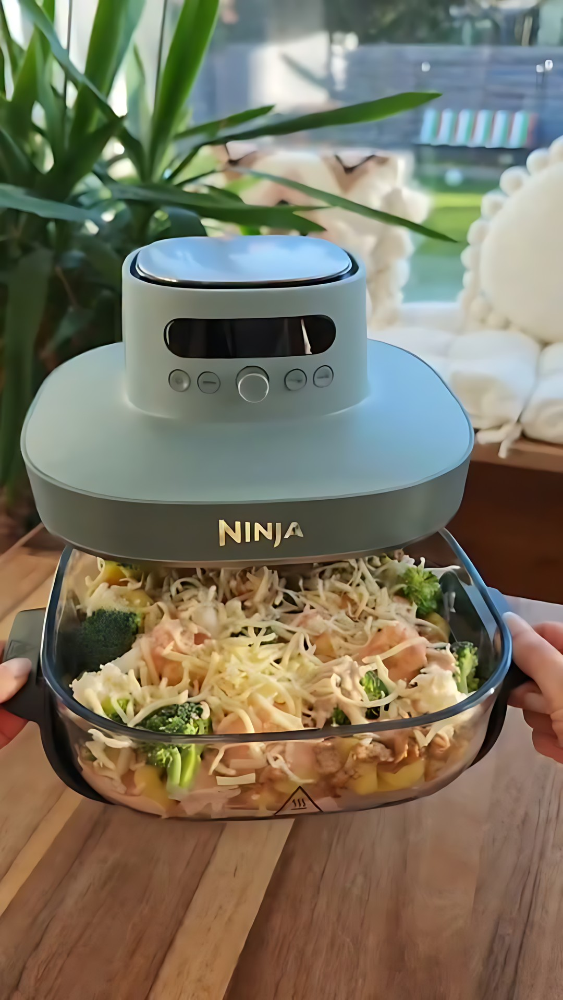

Anzeige
 AnzeigeNinja CRISPi PRO XL · MoosgrünDie Glas-Heißluftfritteuse aus dem Video.Produkt ansehen ↗
AnzeigeNinja CRISPi PRO XL · MoosgrünDie Glas-Heißluftfritteuse aus dem Video.Produkt ansehen ↗
Cremiger Gnocchi-Auflauf mit Hackfleisch, Brokkoli & Mozzarella
Cremiger Gnocchi-Auflauf mit Hackfleisch, Brokkoli & Mozzarella – ein schnelles, herzhaftes Familiengericht aus der Ninja CrispiPro!
- 9 Zutaten
- 4 Schritte
Zur Zubereitung Video ansehen ↗
Zutaten
- Für die Soße
AnzeigeNinja CRISPi PRO XL · MoosgrünDie Glas-Heißluftfritteuse aus dem Video.Produkt ansehen ↗Als Amazon-Partner verdiene ich an qualifizierten Verkäufen.
Zubereitung
- Hackfleisch anbraten. Gnocchi, Hackfleisch, klein geschnittenen Brokkoli und Mozzarella in den Ninja-Behälter geben. Sahne, passierte Tomaten und Gewürze verrühren, darüber gießen und mit geriebenem Käse bestreuen.
- Bei 180 °C im BAKE-Programm ca. 10 Minuten backen.
- Schnell, einfach und unglaublich lecker!
- BLACK FRIDAY IST DA! Hol dir deine Ninja CrispiPro bei Amazon über meinen Link in der Bio – solange das Angebot läuft!